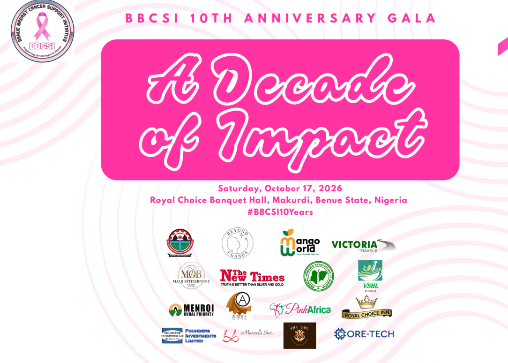

Benue Breast Cancer Support Initiative Marks 10 Years of Impact, Hope, Advocacy and Support
Decade of Impact
· BBCSI Communications Team

The Benue Breast Cancer Support Initiative (BBCSI) is set to commemorate its 10th anniversary, celebrating a decade of commitment to raising breast cancer awareness, supporting patients and survivors, promoting early detection, and advocating for improved cancer care in Benue State and beyond.
Since its establishment in 2016, the Initiative has worked to ensure that individuals and families affected by breast cancer are not left to face the disease alone. Through community awareness campaigns, educational programmes, patient support, advocacy, and partnerships with healthcare professionals and other stakeholders, BBCSI has sought to build a stronger culture of breast health awareness and early action.
The 10th anniversary celebration, themed “Decade of Impact”, will provide an opportunity to reflect on the Initiative’s journey, honour the courage of breast cancer survivors and patients, recognise the contributions of partners and volunteers, and renew the collective commitment to reducing the burden of breast cancer.
“This anniversary is more than a celebration of ten years; it is a celebration of lives touched, families supported, survivors empowered, and communities reached with the message that early detection can save lives.”
“We are grateful to every survivor, caregiver, volunteer, healthcare professional, donor, partner, and advocate who has contributed to this journey. As we look ahead, we remain committed to ensuring that no one faces breast cancer without information, support, dignity, and hope.”
Anniversary Programme
The anniversary programme will run from Tuesday, 13 October to Sunday, 18 October 2026 and will feature the following:
- Visit to the Commissioner for Women’s Affairs —
- Visit to the Federal Medical Center, Makurdi —
- Visit to Hearts & Minds Learning Center, Makurdi —
- Breast Cancer Awareness Campaign, IDP Camp 1, Daudu —
- Friendly Match BBCSI vs Medical Women — at 8 am
- Gala Night — 6–10 pm
- Thanksgiving Service at NKST High Level — at 7:30 am
The Initiative will also use the occasion to draw attention to the continuing importance of breast cancer awareness and early detection. BBCSI encourages women and men to become informed about breast health, seek medical advice about concerning changes, and support efforts that improve access to timely diagnosis, treatment, psychosocial support, and survivorship services.
Over the past decade, BBCSI has benefited from the dedication of survivors and their families, healthcare providers, civil society organisations, government agencies, community leaders, volunteers, donors, and other partners. The Initiative views these relationships as central to its progress and looks forward to strengthening them in the years ahead.
As BBCSI enters its next decade, it is renewing its call for greater collaboration and investment in breast cancer awareness, patient support, early detection, treatment access, survivorship, and community-based cancer initiatives.
About the Benue Breast Cancer Support Initiative
The Benue Breast Cancer Support Initiative (BBCSI) is a nonprofit/community-based organization dedicated to breast cancer awareness, advocacy, patient and survivor support, and community engagement. Through its programmes and partnerships, BBCSI works toward a future where breast cancer is detected early, treated effectively, and no patient or family has to face the journey alone.
Media Contact
Ms. Florence DaviesAssistant Secretary
Benue Breast Cancer Support Initiative (BBCSI)
Email: benuecancergroup@gmail.com
Website: benuebreastcancersupportinitiative.org